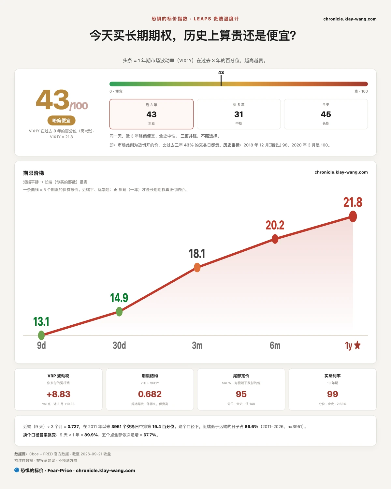
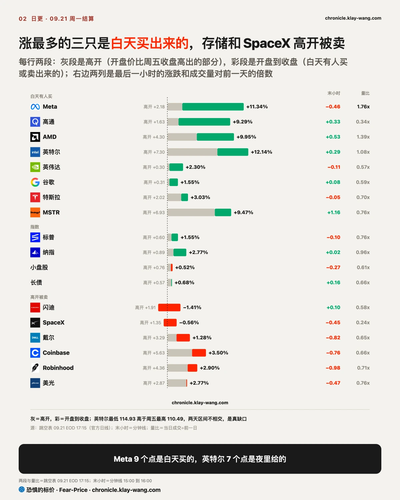
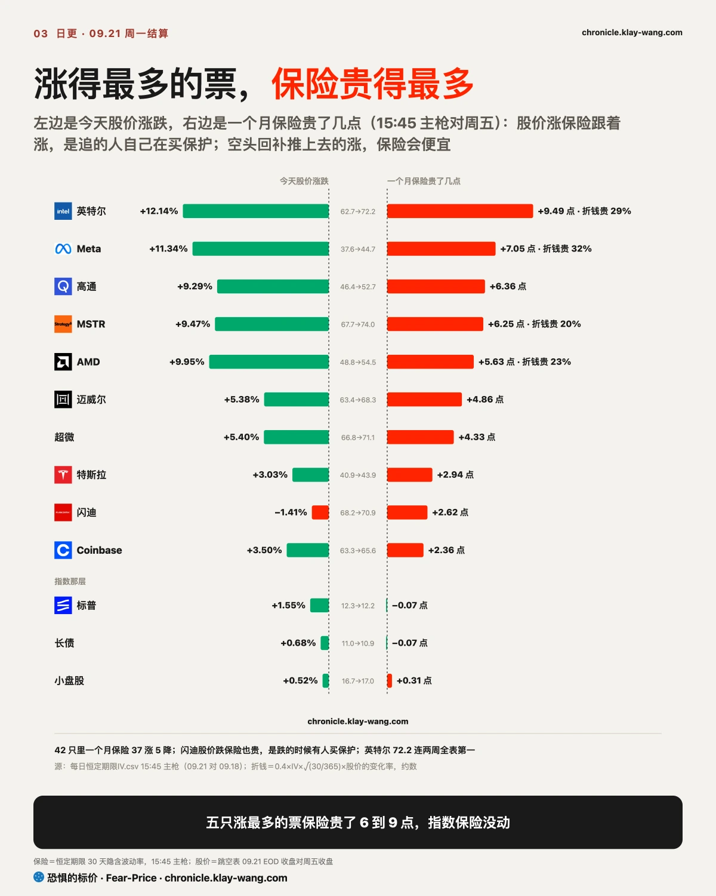
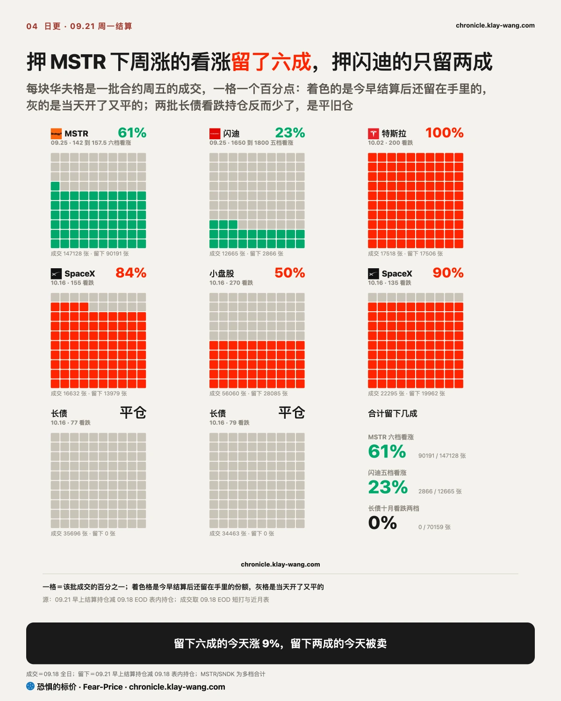
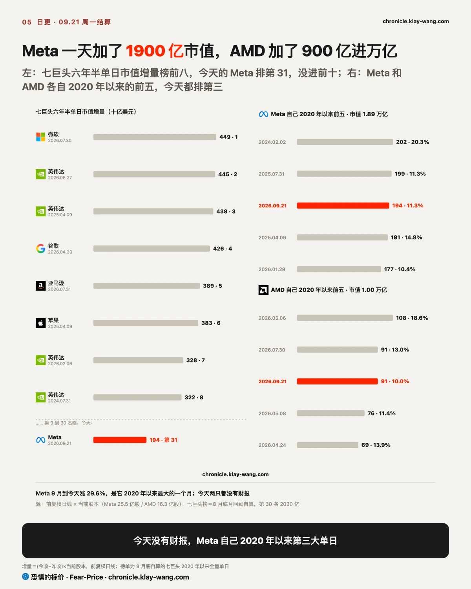
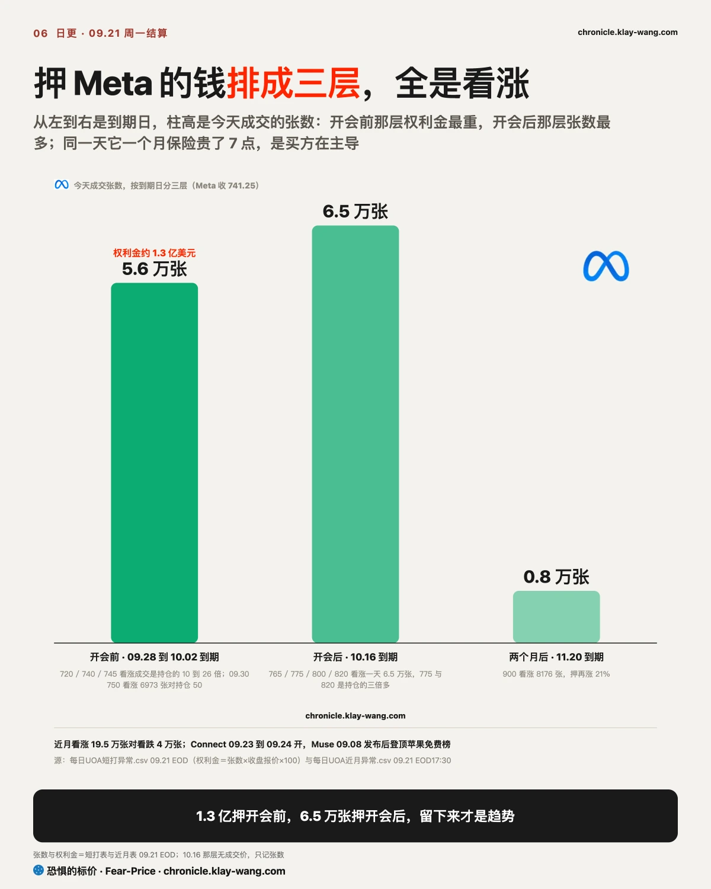

恐惧的标价指数（Fear-Price Index）· 2026-09-21 · 读数 43.0/100：一年期波动率 VIX1Y 为 21.8，处于近三年第 43.0 百分位，高即贵。逐日台账与口径 → chronicle.klay-wang.com · 转载注明：恐惧的标价指数 · Fear-Price
指数涨 1.5%，一年期保险从 41.8 分位到 43.0，几乎没动；VIX 14.87，CNN 恐贪 33.7，两个相除的 K 指数 2.27：恐贪指数在恐惧区、VIX 在低位，调查里说担心的人多，真掏钱买保护的人少，K 要跌破 1 得 VIX 涨过 34，历史在 chronicle.klay-wang.com/kindex，指数自己在 chronicle.klay-wang.com/fear-price。今天动的是信用那一层：给高收益债买一年保险的价钱从 13.8 退到 12.4，投资级从 12.3 退到 10.0。对你的意思：想给指数配保护，今天的价钱和上周一样。

跨资产能串成三条链。油跌，长债涨，黄金跌 0.7%：特朗普催乌克兰停打炼油厂，能源推的通胀担忧退一格，长端买盘回来，抗通胀的东西退，能源板块跌 2.9%。美元涨 0.3% 收在全天最高、日元跌 0.5%、股票涨：避险的日子美元日元一起涨，今天是套息头寸在重建，风险偏好回来了。比特币八个月新高，一天爆了 7.5 亿美元空头，加密三只和芯片一起成了白天买出来的那一组。
三层保险把这天定性：指数一个月保险 12.22 没动，利率保险 81.2 没动，信用一年期退了，宏观三层都按加息是一次性事件定价。同一天涨最多的票保险贵最多：英特尔一个月保险贵 9.5 点到 72.2，连两周全表第一，Meta 贵 7 点，高通、MSTR、AMD 各 6 点上下。股价涨保险跟着涨，只有一种解释，追的人自己在买保护；空头回补推上去的涨，保险会便宜。单票保险涨、指数保险不涨，今天的钱是挑票的。
挑的什么票，看跳空和白天的拆分：高开是隔夜消息和期货推上去的，开盘那一下没人真付过这个价，开盘之后的涨跌才有人掏钱。Meta 跳空 2.2 个点白天买了 9 个点，高通 1.6 对 7.5，英特尔 7.3 对 4.5，MSTR 是夜里给的 6.9 对 2.4；闪迪、戴尔、Coinbase、Robinhood 高开全被卖。你手里要是高开被卖那几只，明天看开盘之后有没有人接，不看今天涨了多少。


第一组芯片、存储、加密，判据是押它们下周涨的看涨留几成，留一半以上才是有人接。今早结算持仓，也就是第二天早上还留在手里的合约：MSTR 六档看涨周五成交 14.7 万张留下 9 万张，六成，今天涨 9.5%；闪迪五档成交 1.27 万张只留 2900 张，两成，今天高开被卖 1.4%。闪迪离 20 天高点 1807 差 2%，站不上之前是被卖的形状。
第二组谷歌、Meta、特斯拉，判据是周一开盘之后有没有人买。三只都被买了，周末那句不高开就没了，今天没成立。
第三组银行，判据是一年期保险哪天不涨。高盛一年期从 38.65 退到 34.19，议息以来第一次退，股价站回 200 日线。

Meta 收 741.25 涨 11.3%，今年 1 月以来最高的收盘价，量是周五的 1.8 倍。市值一天加了约 1900 亿美元，按我们 8 月底拉的七巨头六年半单日榜排第 31，Meta 自己 2020 年以来第三大，只低于 2024 年 2 月那次 +20% 和 2025 年 7 月财报。今天没有财报，有的是两样这周就能兑现的东西：Muse 登顶苹果免费榜，Connect 周三周四开。

押它的钱排成三层，全是看涨。开会前那层最重：10 月 2 日前到期的看涨一天 5.6 万张、权利金约 1.3 亿美元，最重的 720、740、745 三档成交是持仓的 10 到 26 倍，9 月 30 日到期的 750 看涨 6973 张对原有持仓 50 张。10 月中那层张数最多：10 月 16 日到期的 765 到 820 四档一天 6.5 万张，775 和 820 是持仓的三倍多。再往后 11 月 20 日的 900 看涨 8176 张，押两个月涨 21%。近月看涨 19.5 万张对看跌 4 万张。

把这个月放进它自己的历史：9 月涨了 29.6%，是 Meta 2020 年以来最大的一个月，之前最大是 2022 年 11 月的 26.8%。2020 年以来 9 次单日涨 10% 以上，之后五天 7 次是跌的，中位数跌 1.5%，二十天后五涨四跌：涨完那周多半先还一点，再往后看不出方向。空头没什么可轧的，占比 1.13%、1.7 天就能回补。会放大波动的是期权：收盘 741 已经站在 750 那堵看涨墙上方，上方 765 到 820 一天新开 6.5 万张看涨，卖这些看涨的人股价越涨越要买股票补仓，往上会加速，跌回 750 下面也会加速。这么多看涨，正常该是拿着股票的人卖备兑收权利金，成交分不出买卖方向，能看的是保险价：备兑卖出主导时保险会被压下来，今天一个月保险贵了 7 点，是买方在主导。再一个数：最近 30 天实际波动 46、10 天 62，一个月保险 44.7 看着贵，还没追上它真实的动法。
估值方面，上周周五 25 倍，今天涨完 28 倍，到了五年区间 21 到 28.7 的上沿；Evercore 把 Muse 类比去年谷歌的 Gemini 3，估预期市盈率能到 25 到 30 倍、目标价 860，这是估算不是基线。而且 200 日线 624 在下面 19%，2025 年 8 月高点 788 在头顶 6%。这个位置如果是我，要么等开完会看三层留几成，要么用贵了三成的保险把这 11% 锁住一半，保险还没追上实际波动，锁一半不算贵。1.3 亿押的是开会前，6.5 万张押的是开会后，只有后者留下来才是趋势。
AMD 收 615.52 涨 10%，跳空 4.3 个点白天 5.4。上一个收盘高点是 6 月 30 日的 581，今天已经在分析师平均目标价 604 上方；市值一天加约 900 亿，第一次过万亿，AMD 自己 2020 年以来第三大单日；市盈率周五 142 倍，今天再高一成。
期权四层都有钱。当天层：10 月 2 日到期的看涨 5700 万美元，其中 520 深价内那 4100 万是结构性仓不算意见。近月层：10 月 16 日的 700 看涨 5886 张，持仓两倍，押三周涨 14%；同一天 600 看跌 3317 张对原有持仓 206 张，16 倍，是平值保护。远月层：2027 年 2 月的 900 看涨持仓 17 倍，3 月的 810 和 880 看涨各 2000 张，12 月的 1120 看涨 7555 张，同时 2027 年 6 月的 500 看跌 3249 张。一年期层：一个月保险贵 5.6 点，一年期贵 2 点。四层同一个形状：押涨的钱从三周排到一年三个月，同一批人在 600 和 500 买保护；142 倍、万亿、收盘价在目标价上方，跟着追的人也该配一份。
SpaceX 高开 1.35 被卖 1.9，收 151.85 在全天最低。押跌的对了：一个月 155 看跌留下还加了 1.4 万张；远月有人同时买了 2027 年 6 月的 120 看跌和 230 看涨各 1.5 万张，一个九个月的领口。三天了每天有人两头下注，150 那堵墙守住 1.85 美元，明天开在哪一边比涨跌幅重要。
英特尔涨 12%，7.3 个点是夜里给的，今天最低比周五最高还高 4 块，是真缺口；开盘后又买了 4.5 个点，成交 1.89 亿股。一个月保险贵 9.5 点到 72.2，连两周全表第一。押涨的排到 11 月，140 看涨 1.33 万张；配保护的排到明年，2027 年 1 月的 95 看跌 5157 张。收 121.78 站上 20 天高点 111.37 十块，上周等回踩 97 那句收回；市净率 6.2 倍比五年 99.8% 的时间贵。这个位置如果是我，要么等它在 111 上方站三天，要么等保险从 72 往下走。
押下周跌的钱四天退到只剩 8%，上周二还是 54%。看涨 5 亿美元对看跌 4600 万，Meta 一家占四分之一，美光 7800 万，AMD 5700 万，MSTR 押十一天涨两成的看涨一万张。
反方向在指数上：标普近月看跌 58 万张对看涨 36 万张，10 月 16 日到期、收盘下方 5% 到 6% 的两档看跌一天新开 10.6 万张，原有持仓只有 5600 张；小盘股十月看跌第四天，长债十月 83 看涨第四天还在加。个股看涨 8 比 1，指数却有人买十月中旬跌 5% 的保护 10 万张，两边不矛盾：你要是满仓个股，给指数买保护最便宜，标普一个月保险 12.2 在三年里最便宜的一成。
一年期那层收个尾：英特尔、高通、迈威尔、AMD、Meta 的一年期各贵 1.8 到 2.7，买的不是开会那几天的保护；在退的是高盛 4.5、投资级信用 2.3、高收益 1.5、标普 0.45。个股在贵、宏观在退，和一个月那层同一个方向。
手里有 Meta 的：押它的钱 1.3 亿在开会前、6.5 万张在开会后，周三周四见分晓；一个月保险贵了三成但还没追上实际波动。要么等开完会看留几成，要么用保险锁住一半。
手里有 AMD 和芯片的：AMD 万亿、142 倍再高一成，押涨的钱从三周排到一年三个月，同一批人在 600 和 500 买保护；英特尔一天冲过 20 天高点十块，保险全表最贵。跟着追的人也该配一份；英伟达仍是这批里保险最便宜的，一个月 31.4。
手里是指数基金的：指数离高点半个点，一个月保险在三年里最便宜的一成，同一天有人买了 10 万张十月中旬 −5% 的看跌。保护最便宜的时候就是今天这种日子，贵起来是在跌了之后。